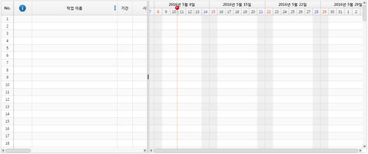

1. 새로운 html 페이지 작성하고 다음과 같이 html 파일 초안을 만듭니다.
|
<!DOCTYPE html> <html lang="ko"> <head> <meta charset="utf-8"/> <meta http-equiv="Content-Script-Type" content="text/javascript"/> <meta http-equiv="Content-Style-Type" content="text/css"/> <meta http-equiv="X-UA-Compatible" content="IE=edge"/> </head> <body> </body> </html> |
2. head 태그에 AUIGanttLicense.js 과 AUIGantt.js 그리고 AUIGantt.resources.kr.js 자바스크립트 파일을 추가 시켜주십시오.
l AUIGanttLicense.js : AUIGantt 라이선스 파일입니다.
l AUIGantt.js : 간트 차트 라이브러리 파일입니다.
l AUIGantt.resources.kr.js : 간트 차트 리소스 파일입니다. (다국어 설정)
위 3개의 JS 를 추가한 후, 스타일을 담당하는 AUIGantt_style.css 파일을 추가시켜 주십시오.
|
<!DOCTYPE html> <html lang="ko"> <head> <meta charset="utf-8"/> <meta http-equiv="Content-Script-Type" content="text/javascript"/> <meta http-equiv="Content-Style-Type" content="text/css"/> <meta http-equiv="X-UA-Compatible" content="IE=edge"/>
<!-- 간트 차트 CSS 스타일 --> <link href="./style/AUIGantt_style.css" rel="stylesheet">
<!-- AUIGantt 라이센스. --> <script type="text/javascript" src="./js/AUIGanttLicense.js"></script>
<!-- AUIGantt 라이브러리 --> <script type="text/javascript" src="./js/AUIGantt.js"></script>
<!-- AUIGantt 리소스 파일 --> <script type="text/javascript" src="./js/resources/AUIGantt.resources.kr.js"></script> </head> <body> </body> </html> |
3. 실제 간트차트가 위치 할 DIV 태그 하나를 작성합니다. 간트차트는 해당 DIV 에 렌더링 됩니다.
|
<!DOCTYPE html> <html lang="ko"> <head> <meta charset="utf-8"/> <meta http-equiv="Content-Script-Type" content="text/javascript"/> <meta http-equiv="Content-Style-Type" content="text/css"/> <meta http-equiv="X-UA-Compatible" content="IE=edge"/>
<!-- 간트 차트 CSS 스타일 --> <link href="./style/AUIGantt_style.css" rel="stylesheet">
<!-- AUIGantt 라이센스. --> <script type="text/javascript" src="./js/AUIGanttLicense.js"></script>
<!-- AUIGantt 라이브러리 --> <script type="text/javascript" src="./js/AUIGantt.js"></script>
<!-- AUIGantt 리소스 파일 --> <script type="text/javascript" src="./js/resources/AUIGantt.resources.kr.js"></script> </head> <body> <!-- 에이유아이간트가 이곳에 생성됩니다. --> <div id="gantt_wrap" style="width:100%; height:600px;"></div> </body> </html> |
4. 간트 차트를 구성하는 속성 및 간트 그리드 필드를 정의해야 합니다.
간트 그리드 필드는 AUIGantt.resources.kr.js(또는 해당 언어 리소스 파일) 에 미리 선언되어 있습니다. 이를 이용하여 다음 처럼 기본 필드인, 작업 이름, 시작날짜, 종료날짜, 기간 등을 배열로 선언합니다.
이는 간트 그리드에 실제로 출력되는 필드를 정의하는 것으로 원하는 필드만을 선택적으로 작성할 수 있습니다. 본 예제에서는 기본 필드 모두를 작성해 보도록 하겠습니다.
|
// 간트 그리드(시트) 에 출력할 칼럼 필드 들 작성함. // 아래는 기본값으로 위치 또는 임의 작성으로 개발자는 작성 가능합니다. var myColumnLayout = [ AUIGantt.defaultColumnInfo.index, // 기본 정보 필드 AUIGantt.defaultColumnInfo.name, // 작업 이름 필드 AUIGantt.defaultColumnInfo.period, // 기간 필드 AUIGantt.defaultColumnInfo.start, // 작업 시작 날짜 필드 AUIGantt.defaultColumnInfo.end, // 작업 종료 날짜 필드 AUIGantt.defaultColumnInfo.predecessor, // 선행 관계 필드 AUIGantt.defaultColumnInfo.resource, // 자원 필드 AUIGantt.defaultColumnInfo.progress // 진행률 필드 ];
// 간트차트 속성 설정 var ganttProps = {
// 편집 가능 여부 editable : true,
// 인덱스 1에 트리 칼럼을 만듬. 즉, 설정한 columnLayout 기준임. treeColumnIndex: 1,
// 간트 그리드(시트) 레이아웃 (필수 정의해야 함) columnLayout : myColumnLayout }; |
간트 시트(그리드) 레이아웃은 배열로 작성되며, 배열 요소로 Object 가 삽입되는데 그 Object 가 하나의 Column 이 됩니다.
참고 사항 : AUIGrid 의 칼럼 레이아웃 작성법과 동일 하니 AUIGrid 를 사용한 경험이 있다면 똑같이 작성하십시오.
5. 작성된 간트 시트 레이아웃과 간트 속성을 토대로 AUIGantt 를 생성합니다.
|
// 실제로 #gantt_wrap 에 간트차트 생성 myGanttID = AUIGantt.create("#gantt_wrap", ganttProps);
// 간트차트에 새 문서 작성하기를 초기화면으로 지정 AUIGantt.createNewDocument(myGanttID, 100); |
create() 메소드로 실제로 앞서 작성한 DIV 에 간트차트를 출력하도록 합니다.
단, create() 메소드를 사용하기 위해서는 HTML DOM 이 준비된 상태여야 합니다. 즉, body의 onload, window.onload 이벤트 발생 후에 생성할 수 있습니다.(즉, jQuery 의 document ready 이벤트 발생 시점 이후)
이를 종합한 소스는 다음과 같습니다.
|
<!DOCTYPE html> <html lang="ko"> <head> <meta charset="utf-8"/> <meta http-equiv="Content-Script-Type" content="text/javascript"/> <meta http-equiv="Content-Style-Type" content="text/css"/> <meta http-equiv="X-UA-Compatible" content="IE=edge"/>
<!-- 간트 차트 CSS 스타일 --> <link href="./style/AUIGantt_style.css" rel="stylesheet">
<!-- AUIGantt 라이센스. --> <script type="text/javascript" src="./js/AUIGanttLicense.js"></script>
<!-- AUIGantt 라이브러리 --> <script type="text/javascript" src="./js/AUIGantt.js"></script>
<!-- AUIGantt 리소스 파일 --> <script type="text/javascript" src="./js/resources/AUIGantt.resources.kr.js"></script>
<script type="text/javascript">
// AUIGantt 생성 후 반환 ID var myGanttID;
// 윈도우 onload, DOM 완료 후 간트 차트 생성함. window.onload = function() {
// 간트차트를 생성합니다. createAUIGanttChart(); };
// AUIGantt 를 생성합니다. function createAUIGanttChart() {
// 간트 그리드(시트) 에 출력할 칼럼 필드 들 작성함. // 아래는 기본값으로 위치 또는 임의 작성으로 개발자는 작성 가능합니다. var myColumnLayout = [ AUIGantt.defaultColumnInfo.index, // 기본 정보 필드 AUIGantt.defaultColumnInfo.name, // 작업 이름 필드 AUIGantt.defaultColumnInfo.period, // 기간 필드 AUIGantt.defaultColumnInfo.start, // 작업 시작 날짜 필드 AUIGantt.defaultColumnInfo.end, // 작업 종료 날짜 필드 AUIGantt.defaultColumnInfo.predecessor, // 선행 관계 필드 AUIGantt.defaultColumnInfo.resource, // 자원 필드 AUIGantt.defaultColumnInfo.progress // 진행률 필드 ];
// 간트차트 속성 설정 var ganttProps = { // 편집 가능 여부 editable : true,
// 인덱스 1에 트리 칼럼을 만듬. 즉, 설정한 columnLayout 기준임. treeColumnIndex: 1,
// 간트 그리드(시트) 레이아웃 (필수 정의해야 함) columnLayout : myColumnLayout };
// 실제로 #gantt_wrap 에 간트차트 생성 myGanttID = AUIGantt.create("#gantt_wrap", ganttProps);
// 간트차트에 새 문서 작성하기를 초기화면으로 지정 AUIGantt.createNewDocument(myGanttID, 100); }; </script>
</head> <body> <!-- 에이유아이간트가 이곳에 생성됩니다. --> <div id="gantt_wrap" style="width:1200px; height:500px;"></div> </body> </html> |
지금까지 작성한 HTML 파일을 브라우저에서 실행시켜 보십시오.
다음처럼 간트차트가 출력된 모습을 볼 수 있습니다.(위 소스 실제 동작 화면 보기)
|
 |